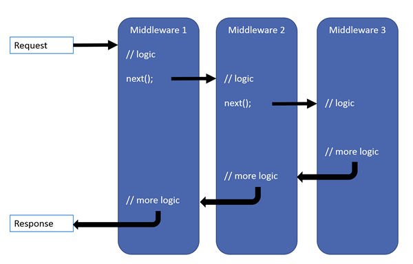

Middleware¶
By Steve Smith and Rick Anderson
Sections:
What is middleware¶
Middleware are software components that are assembled into an application pipeline to handle requests and responses. Each component chooses whether to pass the request on to the next component in the pipeline, and can perform certain actions before and after the next component is invoked in the pipeline. Request delegates are used to build the request pipeline. The request delegates handle each HTTP request.
Request delegates are configured using Run, Map, and Use extension methods on the IApplicationBuilder type that is passed into the Configure method in the Startup class. An individual request delegate can be specified in-line as an anonymous method, or it can be defined in a reusable class. These reusable classes are middleware, or middleware components. Each middleware component in the request pipeline is responsible for invoking the next component in the pipeline, or short-circuiting the chain if appropriate.
Migrating HTTP Modules to Middleware explains the difference between request pipelines in ASP.NET Core and the previous versions and provides more middleware samples.
Creating a middleware pipeline with IApplicationBuilder¶
The ASP.NET request pipeline consists of a sequence of request delegates, called one after the next, as this diagram shows (the thread of execution follows the black arrows):
Each delegate has the opportunity to perform operations before and after the next delegate. Any delegate can choose to stop passing the request on to the next delegate, and instead handle the request itself. This is referred to as short-circuiting the request pipeline, and is desirable because it allows unnecessary work to be avoided. For example, an authorization middleware might only call the next delegate if the request is authenticated; otherwise it could short-circuit the pipeline and return a “Not Authorized” response. Exception handling delegates need to be called early on in the pipeline, so they are able to catch exceptions that occur in deeper calls within the pipeline.
You can see an example of setting up the request pipeline in the default web site template that ships with Visual Studio 2015. The Configure method adds the following middleware components:
- Error handling (for both development and non-development environments)
- Static file server
- Authentication
- MVC
public void Configure(IApplicationBuilder app, IHostingEnvironment env, ILoggerFactory loggerFactory)
{
loggerFactory.AddConsole(Configuration.GetSection("Logging"));
loggerFactory.AddDebug();
if (env.IsDevelopment())
{
app.UseDeveloperExceptionPage();
app.UseDatabaseErrorPage();
app.UseBrowserLink();
}
else
{
app.UseExceptionHandler("/Home/Error");
}
app.UseStaticFiles();
app.UseIdentity();
// Add external authentication middleware below. To configure them please see http://go.microsoft.com/fwlink/?LinkID=532715
app.UseMvc(routes =>
{
routes.MapRoute(
name: "default",
template: "{controller=Home}/{action=Index}/{id?}");
});
}
In the code above (in non-development environments), UseExceptionHandler is the first middleware added to the pipeline, therefore will catch any exceptions that occur in later calls.
The static file module provides no authorization checks. Any files served by it, including those under wwwroot are publicly available. If you want to serve files based on authorization:
- Store them outside of wwwroot and any directory accessible to the static file middleware.
- Deliver them through a controller action, returning a FileResult where authorization is applied.
A request that is handled by the static file module will short circuit the pipeline. (see Working with Static Files.) If the request is not handled by the static file module, it’s passed on to the Identity module, which performs authentication. If the request is not authenticated, the pipeline is short circuited. If the request does not fail authentication, the last stage of this pipeline is called, which is the MVC framework.
Note
The order in which you add middleware components is generally the order in which they take effect on the request, and then in reverse for the response. This can be critical to your app’s security, performance and functionality. In the code above, the static file middleware is called early in the pipeline so it can handle requests and short circuit without going through unnecessary components. The authentication middleware is added to the pipeline before anything that handles requests that need to be authenticated. Exception handling must be registered before other middleware components in order to catch exceptions thrown by those components.
The simplest possible ASP.NET application sets up a single request delegate that handles all requests. In this case, there isn’t really a request “pipeline”, so much as a single anonymous function that is called in response to every HTTP request.
app.Run(async context =>
{
await context.Response.WriteAsync("Hello, World!");
});
The first App.Run delegate terminates the pipeline. In the following example, only the first delegate (“Hello, World!”) will run.
public void Configure(IApplicationBuilder app)
{
app.Run(async context =>
{
await context.Response.WriteAsync("Hello, World!");
});
app.Run(async context =>
{
await context.Response.WriteAsync("Hello, World, Again!");
});
You chain multiple request delegates together; the next parameter represents the next delegate in the pipeline. You can terminate (short-circuit) the pipeline by not calling the next parameter. You can typically perform actions both before and after the next delegate, as this example demonstrates:
public void ConfigureLogInline(IApplicationBuilder app, ILoggerFactory loggerfactory)
{
loggerfactory.AddConsole(minLevel: LogLevel.Information);
var logger = loggerfactory.CreateLogger(_environment);
app.Use(async (context, next) =>
{
logger.LogInformation("Handling request.");
await next.Invoke();
logger.LogInformation("Finished handling request.");
});
app.Run(async context =>
{
await context.Response.WriteAsync("Hello from " + _environment);
});
}
Warning
Avoid modifying HttpResponse after invoking next, one of the next components in the pipeline may have written to the response, causing it to be sent to the client.
Note
This ConfigureLogInline method is called when the application is run with an environment set to LogInline. Learn more about Working with Multiple Environments. We will be using variations of Configure[Environment] to show different options in the rest of this article. The easiest way to run the samples in Visual Studio is with the web command, which is configured in project.json. See also Application Startup.
In the above example, the call to await next.Invoke() will call into the next delegate await context.Response.WriteAsync("Hello from " + _environment);. The client will receive the expected response (“Hello from LogInline”), and the server’s console output includes both the before and after messages:
Run, Map, and Use¶
You configure the HTTP pipeline using Run, Map, and Use. The Run method short circuits the pipeline (that is, it will not call a next request delegate). Thus, Run should only be called at the end of your pipeline. Run is a convention, and some middleware components may expose their own Run[Middleware] methods that should only run at the end of the pipeline. The following two middleware are equivalent as the Use version doesn’t use the next parameter:
public void ConfigureEnvironmentOne(IApplicationBuilder app)
{
app.Run(async context =>
{
await context.Response.WriteAsync("Hello from " + _environment);
});
}
public void ConfigureEnvironmentTwo(IApplicationBuilder app)
{
app.Use(async (context, next) =>
{
await context.Response.WriteAsync("Hello from " + _environment);
});
}
Note
The IApplicationBuilder interface exposes a single Use method, so technically they’re not all extension methods.
We’ve already seen several examples of how to build a request pipeline with Use. Map* extensions are used as a convention for branching the pipeline. The current implementation supports branching based on the request’s path, or using a predicate. The Map extension method is used to match request delegates based on a request’s path. Map simply accepts a path and a function that configures a separate middleware pipeline. In the following example, any request with the base path of /maptest will be handled by the pipeline configured in the HandleMapTest method.
private static void HandleMapTest(IApplicationBuilder app)
{
app.Run(async context =>
{
await context.Response.WriteAsync("Map Test Successful");
});
}
public void ConfigureMapping(IApplicationBuilder app)
{
app.Map("/maptest", HandleMapTest);
}
Note
When Map is used, the matched path segment(s) are removed from HttpRequest.Path and appended to HttpRequest.PathBase for each request.
In addition to path-based mapping, the MapWhen method supports predicate-based middleware branching, allowing separate pipelines to be constructed in a very flexible fashion. Any predicate of type Func<HttpContext, bool> can be used to map requests to a new branch of the pipeline. In the following example, a simple predicate is used to detect the presence of a query string variable branch:
private static void HandleBranch(IApplicationBuilder app)
{
app.Run(async context =>
{
await context.Response.WriteAsync("Branch used.");
});
}
public void ConfigureMapWhen(IApplicationBuilder app)
{
app.MapWhen(context => {
return context.Request.Query.ContainsKey("branch");
}, HandleBranch);
app.Run(async context =>
{
await context.Response.WriteAsync("Hello from " + _environment);
});
}
Using the configuration shown above, any request that includes a query string value for branch will use the pipeline defined in the HandleBranch method (in this case, a response of “Branch used.”). All other requests (that do not define a query string value for branch) will be handled by the delegate defined on line 17.
You can also nest Maps:
app.Map("/level1", level1App => {
level1App.Map("/level2a", level2AApp => {
// "/level1/level2a"
//...
});
level1App.Map("/level2b", level2BApp => {
// "/level1/level2b"
//...
});
});
Built-in middleware¶
ASP.NET ships with the following middleware components:
| Middleware | Description |
|---|---|
| Authentication | Provides authentication support. |
| CORS | Configures Cross-Origin Resource Sharing. |
| Diagnostics | Includes support for error pages and runtime information. |
| Routing | Define and constrain request routes. |
| Session | Provides support for managing user sessions. |
| Static Files | Provides support for serving static files, and directory browsing. |
Writing middleware¶
The CodeLabs middleware tutorial provides a good introduction to writing middleware.
For more complex request handling functionality, the ASP.NET team recommends implementing the middleware in its own class, and exposing an IApplicationBuilder extension method that can be called from the Configure method. The simple logging middleware shown in the previous example can be converted into a middleware class that takes in the next RequestDelegate in its constructor and supports an Invoke method as shown:
using Microsoft.AspNet.Builder;
using Microsoft.AspNet.Http;
using Microsoft.Framework.Logging;
using System.Threading.Tasks;
namespace MiddlewareSample
{
public class RequestLoggerMiddleware
{
private readonly RequestDelegate _next;
private readonly ILogger _logger;
public RequestLoggerMiddleware(RequestDelegate next, ILoggerFactory loggerFactory)
{
_next = next;
_logger = loggerFactory.CreateLogger<RequestLoggerMiddleware>();
}
public async Task Invoke(HttpContext context)
{
_logger.LogInformation("Handling request: " + context.Request.Path);
await _next.Invoke(context);
_logger.LogInformation("Finished handling request.");
}
}
}
The middleware follows the Explicit Dependencies Principle and exposes all of its dependencies in its constructor. Middleware can take advantage of the UseMiddleware<T> extension to inject services directly into their constructors, as shown in the example below. Dependency injected services are automatically filled, and the extension takes a params array of arguments to be used for non-injected parameters.
public static class RequestLoggerExtensions
{
public static IApplicationBuilder UseRequestLogger(this IApplicationBuilder builder)
{
return builder.UseMiddleware<RequestLoggerMiddleware>();
}
}
Using the extension method and associated middleware class, the Configure method becomes very simple and readable.
public void ConfigureLogMiddleware(IApplicationBuilder app,
ILoggerFactory loggerfactory)
{
loggerfactory.AddConsole(minLevel: LogLevel.Information);
app.UseRequestLogger();
app.Run(async context =>
{
await context.Response.WriteAsync("Hello from " + _environment);
});
}
Although RequestLoggerMiddleware requires an ILoggerFactory parameter in its constructor, neither the Startup class nor the UseRequestLogger extension method need to explicitly supply it. Instead, it is automatically provided through dependency injection performed within UseMiddleware<T>.
Testing the middleware (by setting the Hosting:Environment environment variable to LogMiddleware) should result in output like the following (when using WebListener):
Note
The UseStaticFiles extension method (which creates the StaticFileMiddleware) also uses UseMiddleware<T>. In this case, the StaticFileOptions parameter is passed in, but other constructor parameters are supplied by UseMiddleware<T> and dependency injection.